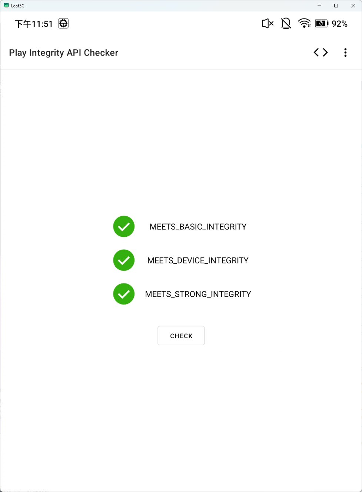

たたなこ
@tatanakots
@ServalCandle 然而我的墨水屏平板需要root后装了模块才能获得play环境以及play integrity认证

たたなこ
@tatanakots
染好了 https://t.co/fIa3PtMxLz
🌸猫宮すみか🎀
@ServalCandle
今天买饼的时候酱香饼大爷和男朋友在聊Linux零日漏洞的事情
大概意思就是只有Linux普通权限的你，现在可以通过一串漏洞获得Root权限了（
笨猫在想这种修改缓存获得Root的方式用在同样是Linux内核的android上
是不是可以做成可绕过play integrity的不可重启Root
来让推和一些银行客户端正常运行（（